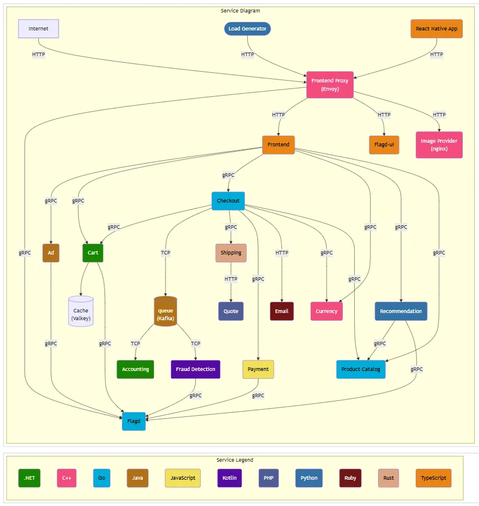
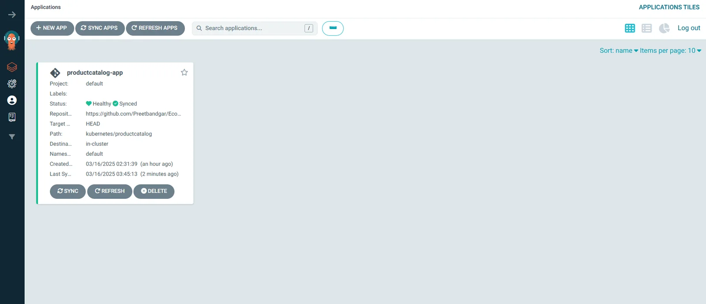
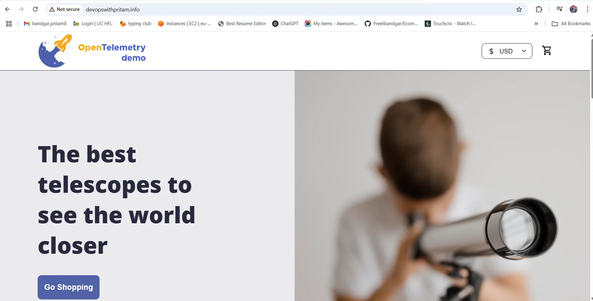

Overview
I deployed the upstream OpenTelemetry Demo to AWS EKS and worked on the delivery workflow around its product-catalog service. The demo application was created by the OpenTelemetry project; my contribution was infrastructure and deployment configuration.
Implementation
- Used Terraform-managed AWS resources and Kubernetes manifests for the demonstration deployment.
- Configured a GitHub Actions workflow for the product-catalog service, with code checks, image build/push, vulnerability scanning and manifest updates.
- Used Argo CD to sync Kubernetes manifests and checked the resulting application state.
- Recorded application access through the frontend proxy and custom domain. The CI/CD workflow described here applies to the product-catalog service, not every microservice.
Deployment checks
I used the GitHub Actions run to follow the product catalog image through build, checks and manifest updates, then checked Argo CD for the synchronized deployment state. This automation is configured for the product catalog service only.
Screenshots and recordings





